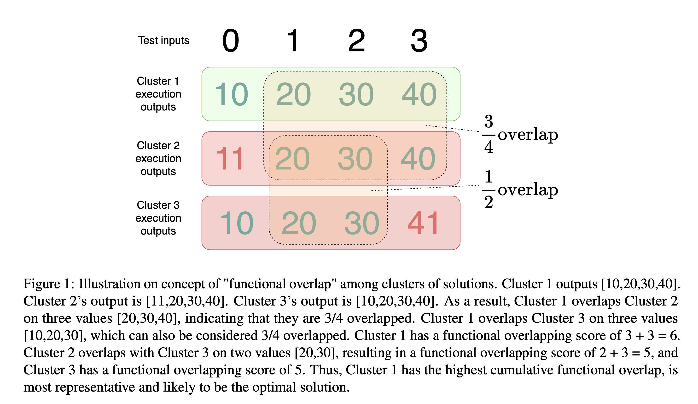
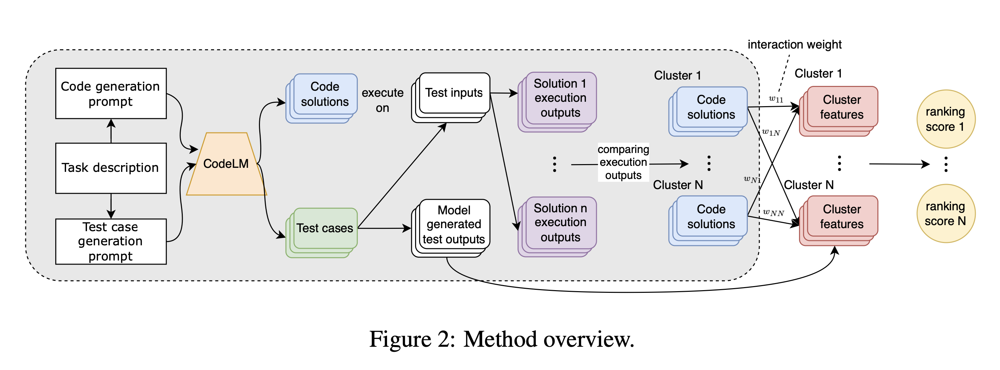

Code Large Language Models (CodeLLMs) have ushered in a new era in code generation advancements. However, selecting the best code solutions from all possible CodeLLM outputs remains a challenge. Previous methods often overlooked the intricate functional similarities and interactions between solution clusters.
We introduce SRank, a novel reranking strategy for selecting the best solutions from code generation, focusing on modeling the relationships between clusters of solutions. By quantifying the functional overlap between solution clusters, our approach provides a better ranking strategy for code solutions.
Empirical results show that our method achieves remarkable results on the pass@1 score. For instance, on the Human-Eval benchmark, we achieve 69.66% in pass@1 with Codex002, 75.31% with WizardCoder, 53.99% with StarCoder, and 60.55% with CodeGen, surpassing state-of-the-art code generation reranking methods such as CodeT and Coder-Reviewer on the same CodeLLM by a significant margin (≈ 6.1% improvement on average). Even in scenarios with a limited number of sampled solutions and test cases, our approach demonstrates robustness and superiority, marking a new benchmark in code generation reranking.
SRank introduces a new metric called "functional overlap" to quantify the similarity between clusters of code solutions based on their execution outputs. This allows us to identify the most representative cluster that exhibits maximum overlap with all other clusters. The intuition is that the cluster interacting most comprehensively with others is likely to be the most consistent and, therefore, the most promising cluster that contains optimal solutions.
The concept of "functional overlap" is illustrated in Figure 1. In essence, we execute code solutions from each cluster on the same test inputs and compare their outputs. The level of output match indicates the extent of functional overlap between two clusters. 
The overall method pipeline of SRank is illustrated in Figure 2. 
We evaluated SRank on several state-of-the-art CodeLLMs, including Codex, WizardCoder, StarCoder, and CodeGen. Our results show that SRank consistently outperforms existing methods in code generation reranking e.g CodeT and Coder-Reviewer, achieving significant improvements in functional correctness measured in pass@1.
| WizardCoder34B | WizardCoder15B | CodeGen2.5-Instruct | StarCoder | Codex002 | CodeGen16B | |
|---|---|---|---|---|---|---|
| Random | 59.88 | 45.20 | 26.68 | 32.55 | 37.06 | 22.78 |
| Greedy | 68.90 | 50.61 | 28.05 | 39.63 | 47.00 | 29.70 |
| CodeT | 72.36 | 58.64 | 56.81 | 50.51 | 65.80 | 36.70 |
| Coder-Reviewer | - | 49.37 | 45.63 | 38.71 | 66.90 | 42.60 |
| SRank | 75.31 | 59.99 | 60.55 | 53.99 | 69.66 | 43.07 |
| WizardCoder34B | WizardCoder15B | CodeGen2.5-Instruct | StarCoder | Codex002 | CodeGen16B | |
|---|---|---|---|---|---|---|
| Random | 54.37 | 45.72 | 34.60 | 39.26 | 47.50 | 31.54 |
| Greedy | 60.42 | 51.29 | 42.86 | 45.90 | 58.10 | 42.40 |
| CodeT | 63.39 | 58.18 | 55.02 | 58.05 | 67.70 | 49.50 |
| Coder-Reviewer | - | 52.52 | 52.74 | 49.48 | 64.70 | 50.30 |
| SRank | 64.14 | 59.01 | 57.02 | 58.38 | 69.25 | 51.03 |
These results demonstrate the effectiveness of SRank in improving the accuracy of code generation across various CodeLLMs.
We propose SRank, a novel reranking strategy designed to extract optimal code generation solutions from CodeLLMs. By modeling the relationships between clusters of code solutions, we can more effectively identify the best solutions and improve the overall accuracy of code generation. We showcase the state-of-the-art performance of SRank on pass@1 across various well-known CodeLLMs, surpassing other ranking methods like CodeT and Coder-Reviewer in extensive evaluations.
We believe that SRank will be a valuable tool for developers, researchers, and anyone who uses code generation in their work. We are excited to see how this technology will be used to improve the way we write and interact with code.
@article{to2024functional,
author = {Hung Quoc To and Minh Huynh Nguyen and Nghi D. Q. Bui},
title = {Functional Overlap Reranking for Neural Code Generation},
journal = {ACL},
year = {2024},
}